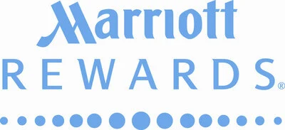
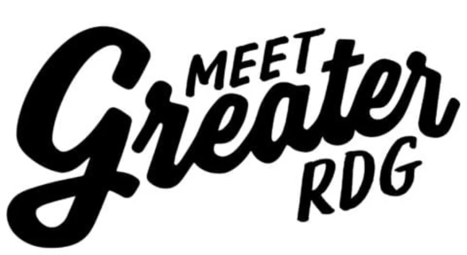
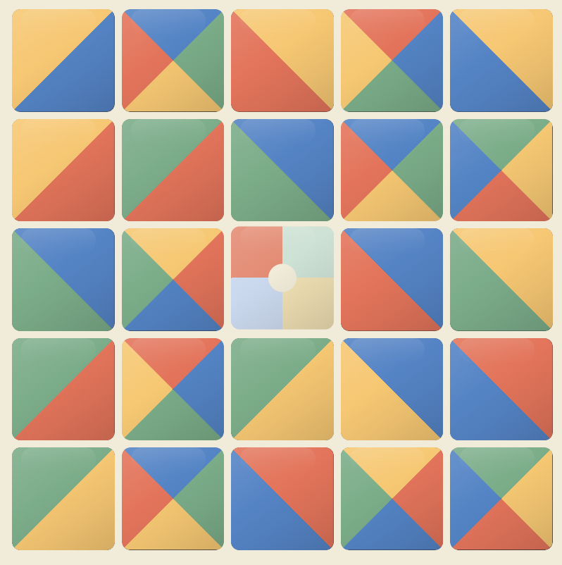
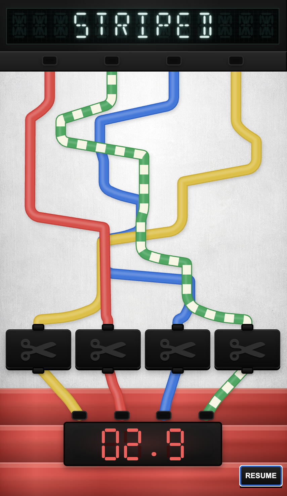
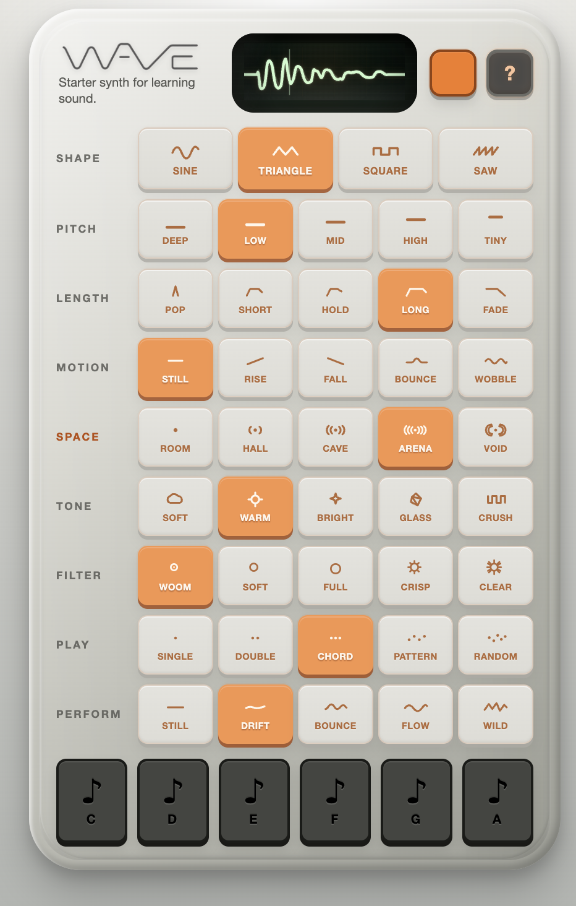

$0 to $7M ARR
Helped build the measurement and reporting foundation for a new D2C business inside a global baby and pet gear manufacturer, moving from launch-stage visibility to early profitability and investment-ready decision-making.
Ecommerce · Measurement · Discovery
Hi, I’m Jonathan. I help ecommerce organizations turn fragmented analytics, search, governance, reporting, and infrastructure into trusted operating systems for better digital decisions.
I do my best work in the overlap between business questions, technical systems, and team ownership, where clearer structure helps people make better decisions.
Built and supported digital systems across enterprise, global, and local operating environments.


Early systems
My early fascination with the web started in the late 90s and early 2000s. I was lucky to have strong coding and web design classes in high school, and the web felt like the perfect left-brain / right-brain mix: technical, visual, interactive, and immediately usable.
In college, I was in a computer-science centered program. The deeper I got into classic software engineering, especially assembly programming, the more I realized I was drawn to the user-facing side of technology: the functional aesthetics of interfaces, how people moved through systems, and whether the experience helped them get something done.
At the same time, I was working in software support and intranet development at Santander, which gave me a practical view of how people actually use internal systems.
Web + business questions
After that, I built Cast & Crew, a boutique web and app agency, with two partners in a business incubator. We supported local businesses across many categories and served as a support arm to award-winning agencies delivering larger projects for Marriott Rewards, Sweet Street, and Rodale.
That mix gave me a view into small business needs, agency operations, and the gap between delivering digital work and knowing whether it actually solved the business problem.
That was the shift: I wanted to understand performance not as reporting after the fact, but as an operational feedback loop between what was built, how people used it, and what the business needed it to do.
Enterprise scale
At Penn National Gaming, the scale changed fast. Penn was the largest domestic casino operator and was moving through aggressive growth, acquisitions, and expanding digital expectations. Paid and organic performance were the entry point, but the real complexity sat in launches, compliance, accessibility, loyalty programs, measurement quality, and teams across dozens of properties working from shared systems.
That was where the work started moving beyond channel performance. Tracking, SEO, launches, and reporting were all connected, and the quality of the decisions depended heavily on the quality of the systems underneath them.
Global ecommerce systems
At Wonderland Nursery Goods, the complexity changed shape again. Global brands, international regions, ecommerce platforms, product catalogs, growing paid, organic, and CRM programs, plus emerging consent and legal requirements introduced new operational risk and exposed a different set of maturity gaps.
I helped move that environment toward more scalable operating infrastructure by centralizing reporting, formalizing definitions, improving governance, and connecting analytics, search, measurement, consent, and stakeholder enablement into systems teams could actually use.
The overlap
Most organizations treat UX, development, SEO, analytics, and governance as separate functions. In practice, they constantly shape each other. Tracking decisions affect reporting quality. Consent implementations affect acquisition visibility. UX changes can alter search performance, conversion behavior, and how confidently teams interpret the results. Even small platform settings can quietly reshape what teams believe is happening.
Over time, I stopped seeing those as adjacent disciplines and started seeing them as one operating pattern: commercial priorities, technical systems, governance requirements, and team ownership all shaping the same outcomes.
I work as a connective operating layer between commercial priorities, technical systems, governance needs, and regional execution, helping teams translate requirements, align decisions, and move shared systems forward.
Growth
Commerce
Enterprise
The strongest outcomes changed how teams operated, not just what dashboards showed.
Helped build the measurement and reporting foundation for a new D2C business inside a global baby and pet gear manufacturer, moving from launch-stage visibility to early profitability and investment-ready decision-making.
Supported analytics across regional ecommerce teams operating on different sites, platforms, agencies, legal requirements, and maturity levels, while pushing toward shared definitions and comparable reporting.
Replaced recurring manual reporting cycles with centralized BigQuery logic and reusable reporting products, improving recurring reporting efficiency by roughly 50 to 100 percent and making updates easier to scale.
Contributed to search gains by turning technical SEO from one-off fixes into operating standards for structured data, indexation, canonicalization, crawl behavior, and search reporting.
Helped recover from a major tracking accuracy decline by coordinating tracking fixes, backfills, server-side improvements, and platform changes across analytics, ecommerce, consent, and implementation layers.
Leading a centralized consent model across markets where privacy requirements, regional banners, tracking behavior, and business reporting all need to stay aligned.
Future-facing systems
Structured information is becoming a business operating advantage.
Reporting systems, structured data, consent-aware measurement, technical documentation, and analytics workflows all sit on the same maturity curve.
The challenge is not just producing more data. It is building systems that are trustworthy, interpretable, and usable across teams, platforms, and increasingly machine-assisted discovery environments.
AI-assisted discovery and agentic experiences raise the stakes, but the underlying work is still organizational: clearer standards, better governance, stronger implementation, and information systems that both people and machines can act on.
A small set of side projects where I explore systems thinking through play, interaction design, rapid prototyping, sound, game mechanics, and model-assisted workflows.

Tile-based puzzle game exploring spatial logic, merge mechanics, and progressive interaction design.

A fast “cut the wire” puzzle concept built around misdirection, visual tension, and arcade-style interaction.

A playful sound-sculpting interface for learning synthesis concepts through shape, pitch, motion, space, filter, and performance controls.
Outside of work, most of my time is with my wife and kids. I’ve trained Brazilian jiu-jitsu for 16 years and I’m a brown belt working toward black.
At home, I’m usually outside working on long-running projects: transforming an invasive woodland into a native wildflower trail, setting up an orchard and berry patch, and laying the foundation for growing vegetables.
Before you go
If any of this overlaps with how you think about ecommerce measurement, search and discovery, governance, data products, or digital operating systems, I’d be happy to connect.